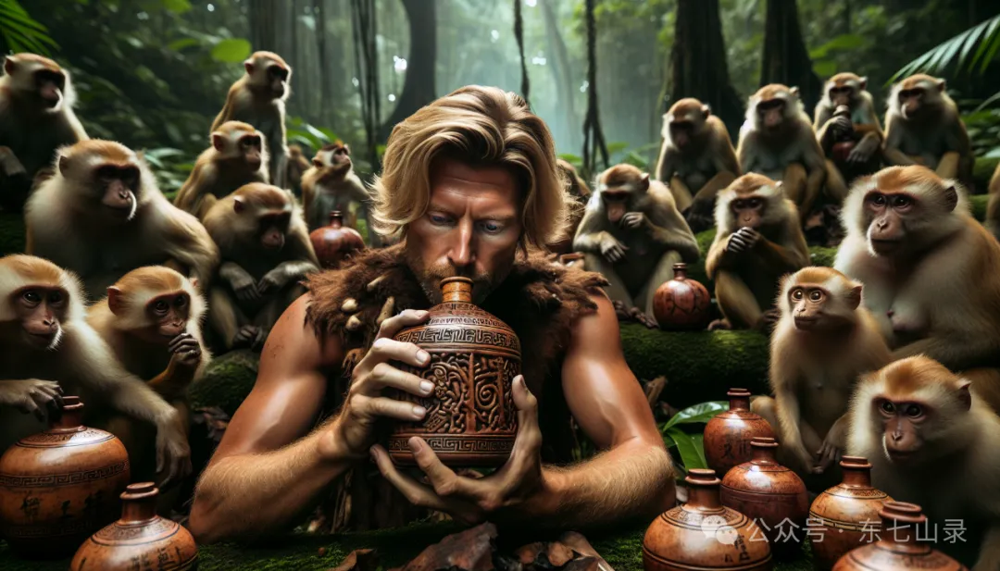

“在这世界上，人类并非第一个酿酒的族群。反而猴子，走在了人的前面。”
——gu真人
人祖挖去左右双眼，分别化为大儿子太日阳莽，二女儿古月阴荒。太日阳莽和古月阴荒朝夕相处，不禁对自己的妹妹动了情思。但古月阴荒却屡屡拒绝了太日阳莽的追求。
太日阳莽为此困恼不已。他知道自己需要帮助，因此求教智慧蛊。
起先，智慧蛊并不搭理他，能躲多远就躲多远。但是太日阳莽锲而不舍，智慧蛊不堪其扰，只好对他说了一个法子——“在世界的东方，栖息着一群蜜桃猴。它们酿了酒，你先去喝了酒，再来找我罢。”

太日阳莽便去了东方，喝了酒。蜜桃猴群酿的是果酒。太日阳莽喝了之后回来，从此以后，他的脸蛋就变得红扑扑的。他咂咂嘴回味道：“原来酒是甜的。”
智慧蛊笑了笑，又对他说：“在世界的西方，有一群通灵猴。它们酿了酒，你再去喝。”
通灵猴酿的酒，是苦酒。太日阳莽又去了西方，喝了酒，从此以后，他的舌苔就是黄褐色的。他一脸苦兮兮的样子回来：“原来酒也有苦的。”
智慧蛊便对他说：“酒有苦甜，爱情也是如此，人生更是如此。在那北面，有一群金刚猴。它们也有酒，你去喝喝看。”
金刚猴酿的是烈酒。太日阳莽喝了很对胃口，他喜欢烈酒，喝得酩酊大醉。他觉得这酒太对他胃口了，醉了之后更想喝。喝了碗里的，还想喝坛子里的。
最终，他吐得一塌糊涂。酒劲上来，让他难受得快要死了。他感觉自己的身体内，仿佛有火焰在燃烧，有岩浆在流淌。
“太热了！”他大叫一声，所有炎流都逆冲头顶，头发腾地燃烧起来。从此以后，他有了火一样不断燃烧的头发。
当太日阳莽醒来的时候，他发现智慧蛊正看着他。“你喝了烈酒，有什么感悟呢？”智慧蛊问他。
太日阳莽叹气道：“我算是明白了，再好的酒喝多了也会吐的。凡事都应该适可而止。”
智慧蛊哈哈大笑，又说道：“在世界的南方，栖息了一群天水猴。它们酿了酒，也蛮不错的。你去喝喝看吧。”
天水猴酿的是清酒，和烈酒是两个极端。太日阳莽淡淡地品酒，不禁忘却了烦恼，醉眼朦胧间，微醺而飘然。
智慧蛊再问他感受。他轻轻地摆摆手道：“已得酒中趣，勿为醒者传。”
智慧蛊轻轻一笑，悄然而去……